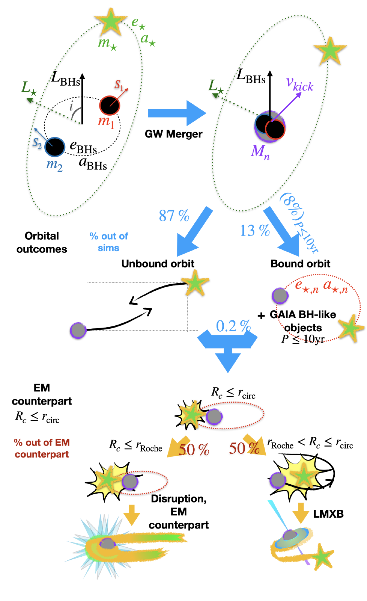

Black holes are invisible, yet we know they are out there—from the remains of dead stars to giants millions of times heavier than the Sun. But how can we study something that swallows even light? Astronomers have developed multiple ways to reveal their presence. For stellar-mass black holes, these include gravitational waves—ripples in spacetime produced when two black holes collide; the discovery of quiet companions to stars with the Gaia space telescope; and brilliant X-ray binaries powered by matter falling from a star into a black hole.
Despite this remarkable progress, the connections linking these discoveries have remained elusive. How do merging black holes detected by gravitational waves relate to quiescent companions spotted by Gaia? What evolutionary paths link them to accreting X-ray binaries? And what hidden role might distant stellar companions play in shaping these systems?
In Naoz et al. 2025, we proposed a new formation pathway that directly links these three populations. In our scenario, a black hole binary merges while accompanied by a distant, seemingly unimportant stellar companion. The powerful kick the new black hole receives after merging can suddenly bring this tertiary star into play, leading to a variety of outcomes: an unbound system, a bright electromagnetic flare, the birth of a low-mass X-ray binary, or a detached companion resembling those found by Gaia (see illustration below). This work was the first to connect these distinct populations with a single physical mechanism, predicting that rare outcomes, such as electromagnetic counterparts to black hole mergers, may be robust and detectable.
What excites me most about this connection is that it shows how the universe is far more intertwined than it first appears. The Laser Interferometer Gravitational-Wave Observatory (LIGO) and its partners have transformed our view of the Universe, allowing us to sense black holes beyond the electromagnetic spectrum. Yet this new sense also revealed new puzzles. By tying together gravitational-wave events, Gaia black holes, and X-ray binaries, we begin to see not isolated phenomena but a continuous story—different windows onto the same cosmic lives of black holes. For me, that is the amazing part: we are finally starting to understand how these mysterious objects are all connected.
Figure adopted from Naoz et al. 2025, The Astrophysical Journal-Letters